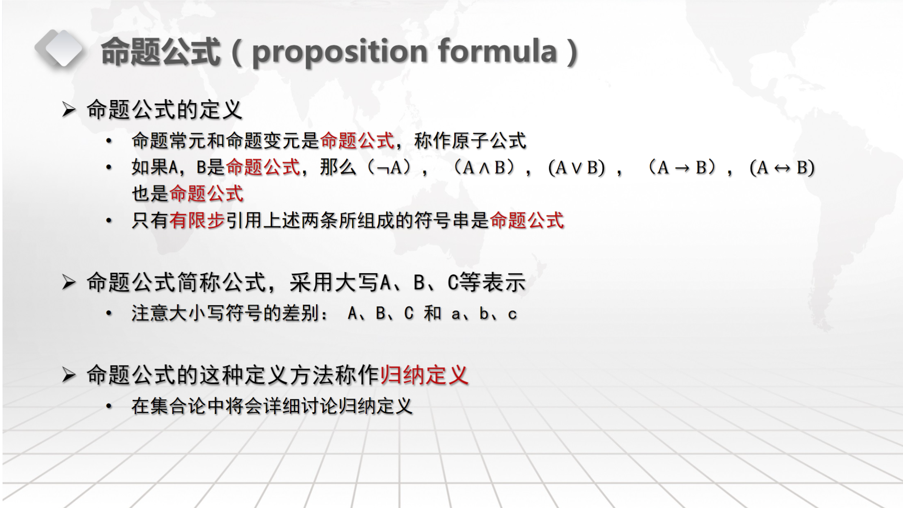
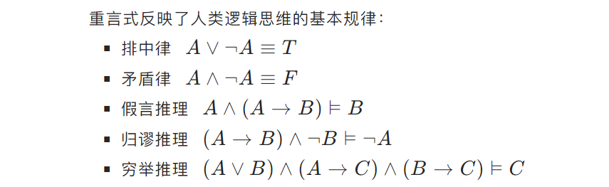
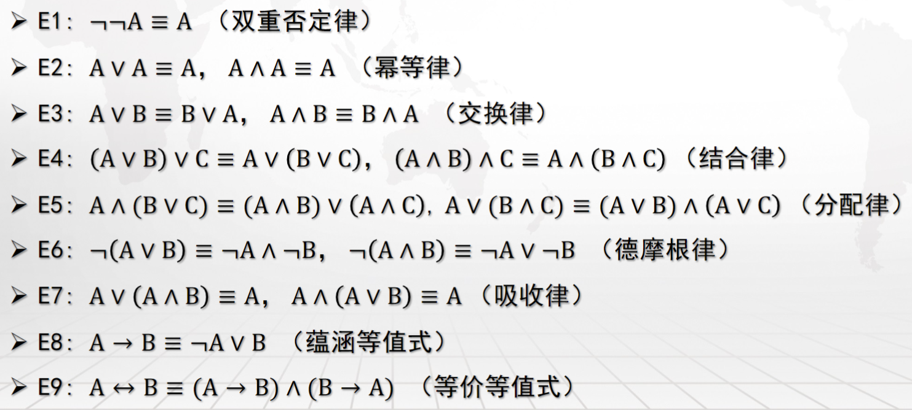
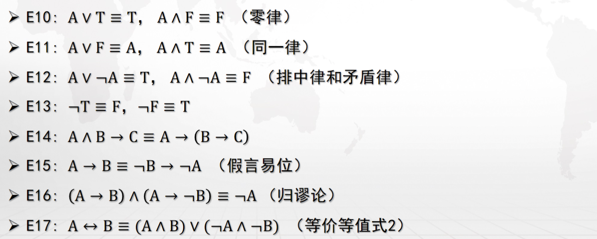
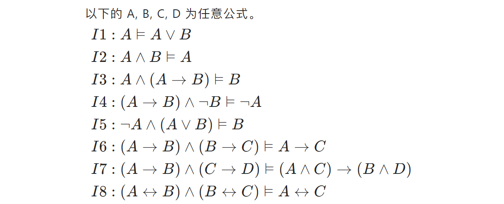
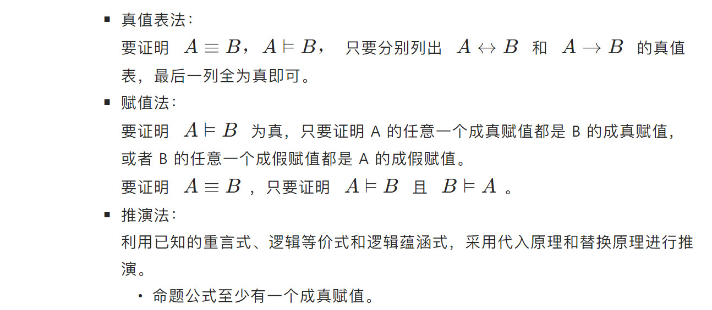

01 Propositional Logic
I Introduction¶
I.1 base notations¶
Our first building block is the notion of a proposition, which is simply a statement which is either true or false.
For example:

Notations we should know:
- Conjunction（合取）: P∧Q (“P and Q”). True only when both P and Q are true.
- Disjunction（析取）: P∨Q (“P or Q”). True when at least one of P and Q is true.
- Negation（取反 / 否）: ¬P (“not P”). True when P is false.
- Implication（蕴涵词）: P ⇒ Q (“P implies Q”). This is the same as “If P, then Q.”**
- two-way implication p↔q
(Detailed reason omission)
- quantifiers: The universal quantifier ∀ (“for all”) and the existential quantifier ∃ (“there exists”).
We often write a proposition in the form of something like (∀x ∈ Z)(∃y ∈ Z)(x < y)
- equivalent is something like:
- ¬(P∧Q) ≡ (¬P∨ ¬Q)
- ¬(P∨Q) ≡ (¬P∧ ¬Q)
Of course, these two formulas should be remembered since they tell us how to negate conjunctions and disjunctions
- about P→Q, the truth table is shown below:(
0stands for F while1stands for T)
| P | Q | P→Q |
|---|---|---|
| 0 | 0 | 1 |
| 0 | 1 | 1 |
| 1 | 0 | 0 |
| 1 | 1 | 1 |
- about P↔Q, the truth table is shown below:(
0stands for F while1stands for T)
| P | Q | P↔Q |
|---|---|---|
| 0 | 0 | 1 |
| 0 | 1 | 0 |
| 1 | 0 | 0 |
| 1 | 1 | 1 |
- We say that a sentence A entails another sentence B if in all models that A is true, B is as well, and we represent this relationship as A ⊨ B.
I.2 proposition formula¶




（穷举定理我们在 02-Proof 中的 "Proof by Cases" 部分中将会使用到）
I.3 logical equivalence¶
当命题 \(A\longleftrightarrow B\) 是重言式时，称 A 逻辑等价于 B，记作 \(A\equiv B\)。
实际上，符号 ⊨ 也是，但是打不出来，所以一般用 \(\equiv\) ；
逻辑等价：任何赋值情况下，A 和 B 都等值。
I.3.1 important logical equivalence¶


I.4 logical implication¶
当命题公式 A \(\to\) B 是重言式时，则称 A 逻辑蕴涵 B ，记作 A⊨B。
公式 A 的所有成真赋值都是公式 B 的成真赋值。
即任何赋值情况下，只要 A 为真，则 B 为真； \(A \equiv B\) 即为 \(A⊨B \land B⊨A\) 。
I.4.1 important logical implication¶

I.5 The important properties of logical equivalence and logical implication¶

I.6 ways to proof¶

I.7 priority of operations¶
1. 括号 ()：无论在哪个领域，括号始终具有最高的优先级，用于改变默认的优先级顺序。
2. 非 ~ !：在逻辑运算中，否定（逻辑非、位非）通常具有较高的优先级。
3. 与 ∧：这包括逻辑与（AND
II signs in latex¶
| 符号 | ¬ | ∧ | ∨ | → | ↔ |
|---|---|---|---|---|---|
| latex 公式 | \neg | \wedge | \vee | \to | \leftrightarrow |
III Practice¶
Quote
We need a lot of insight into propositions rather than just grasping concepts
For every real number k, there is a unique real solution to \(x^{3}\) = k.
(∀k ∈ R) (∃x ∈ R)(x 3 = k)∧(∀y,z ∈ R)(((y 3 = k)∧(z 3 = k)) ⇒ (y = z)) .